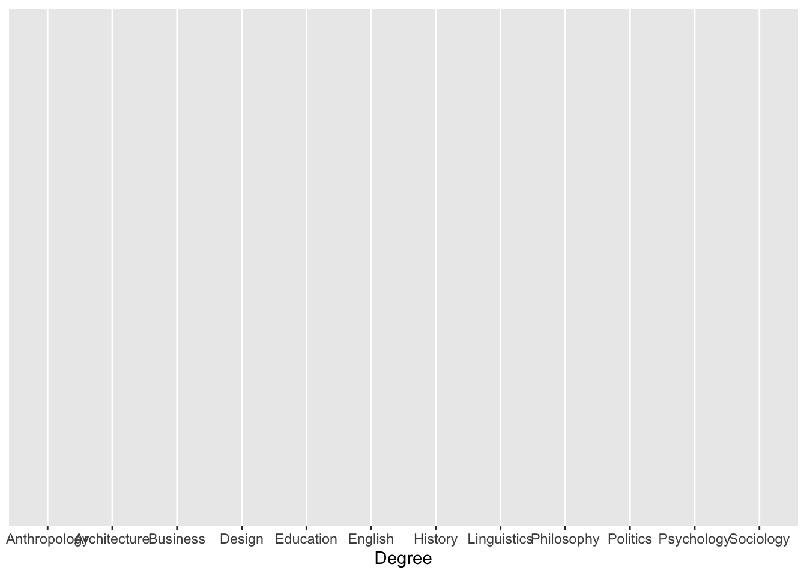
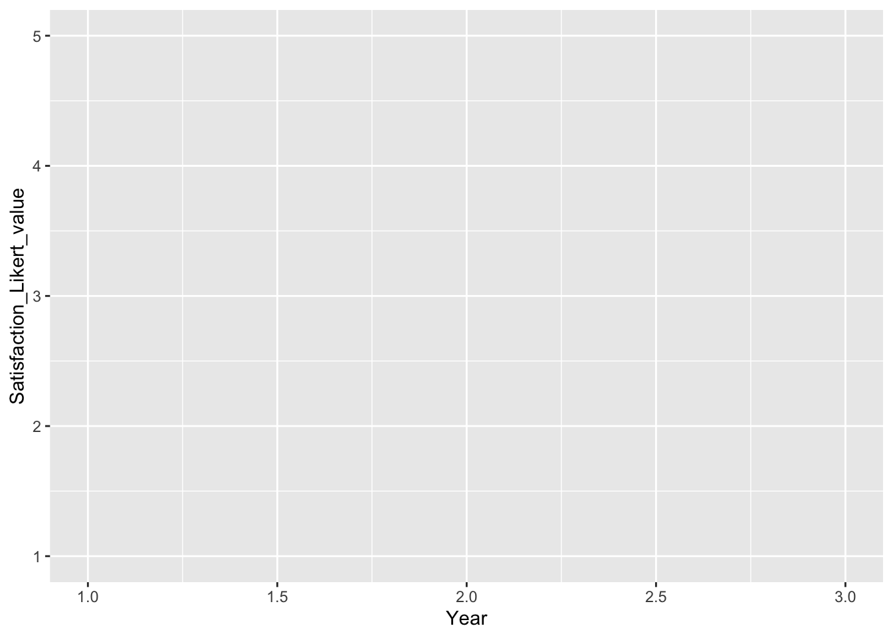
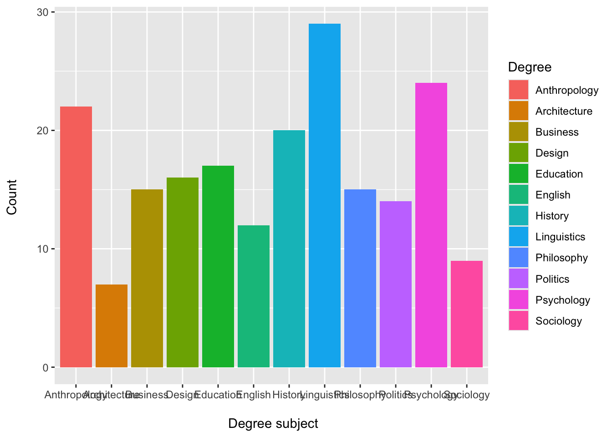
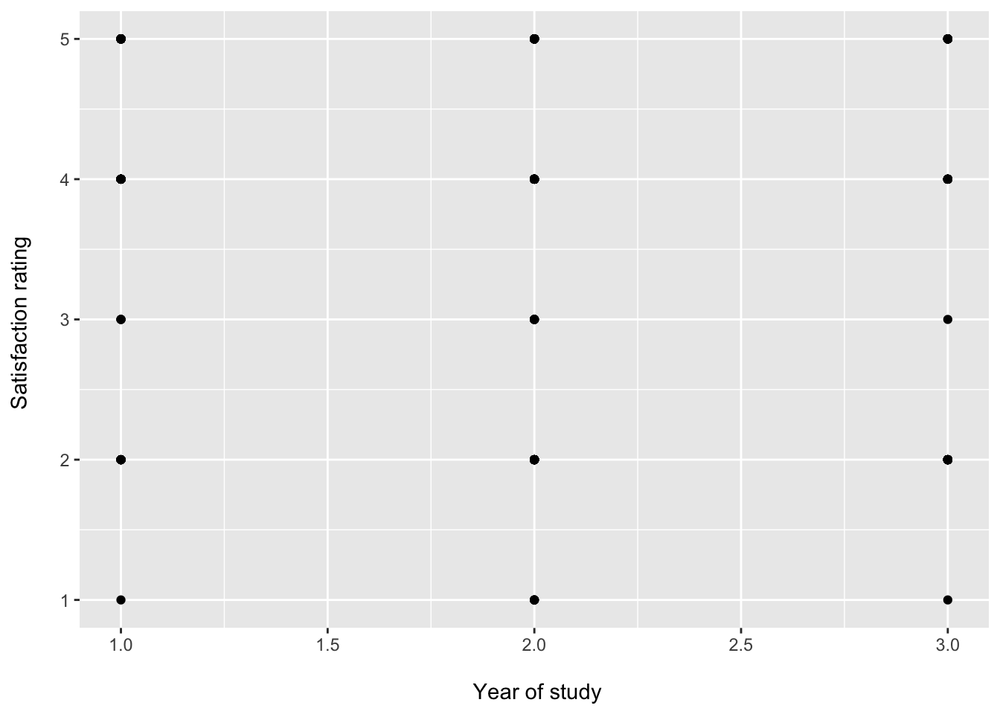
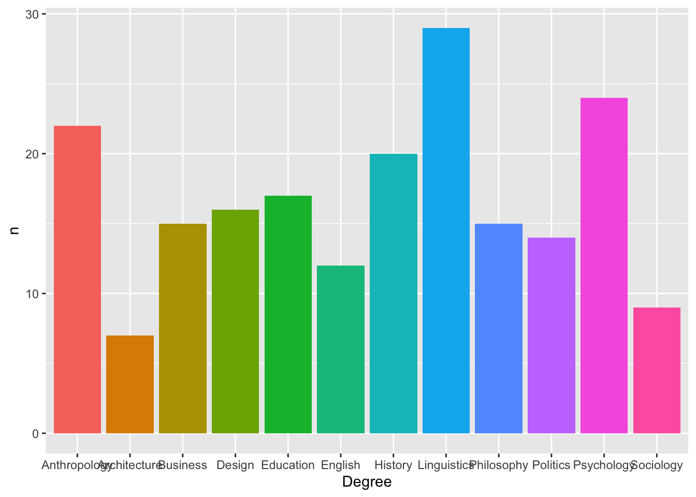
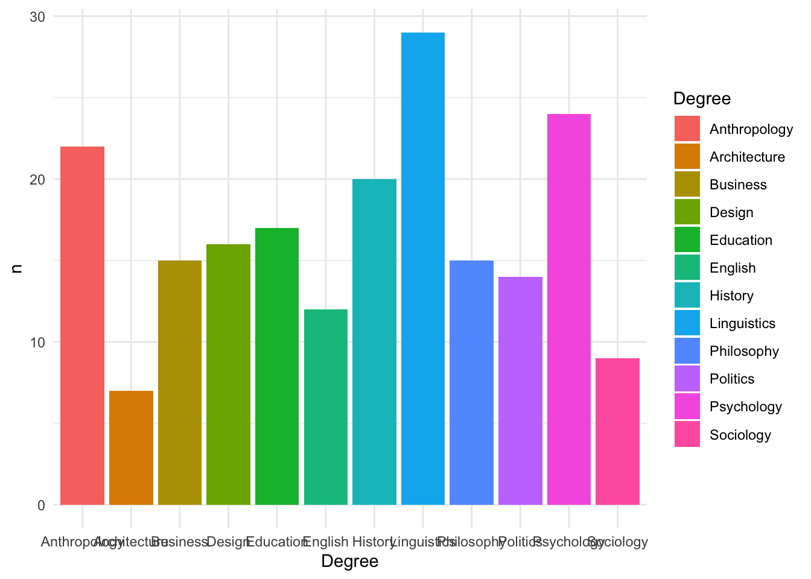
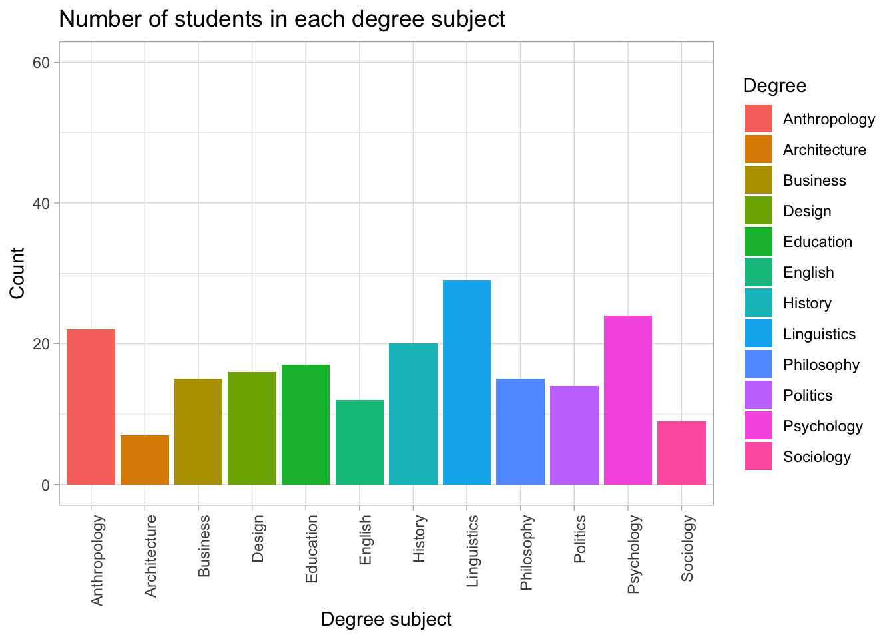
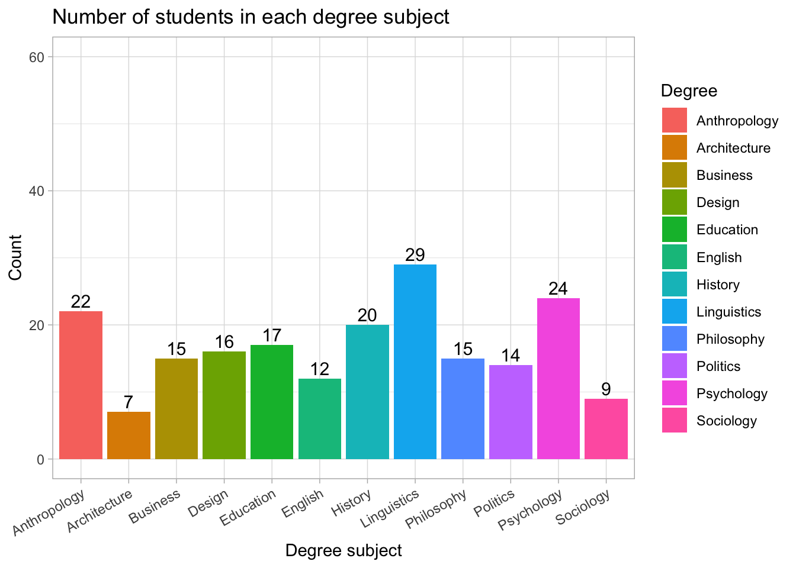
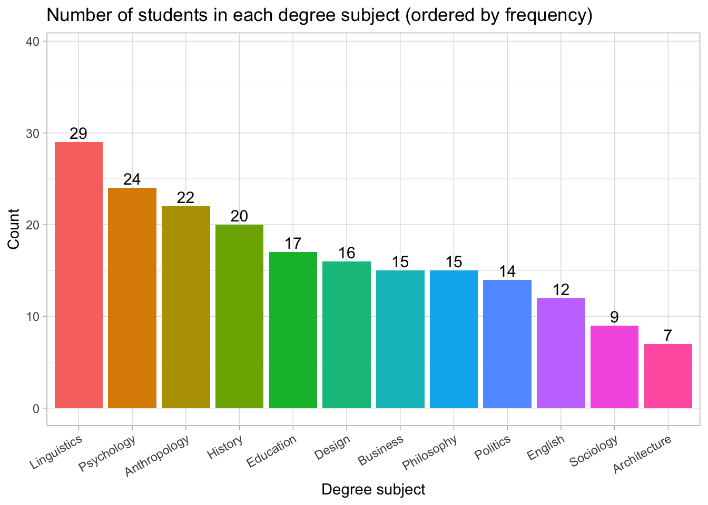
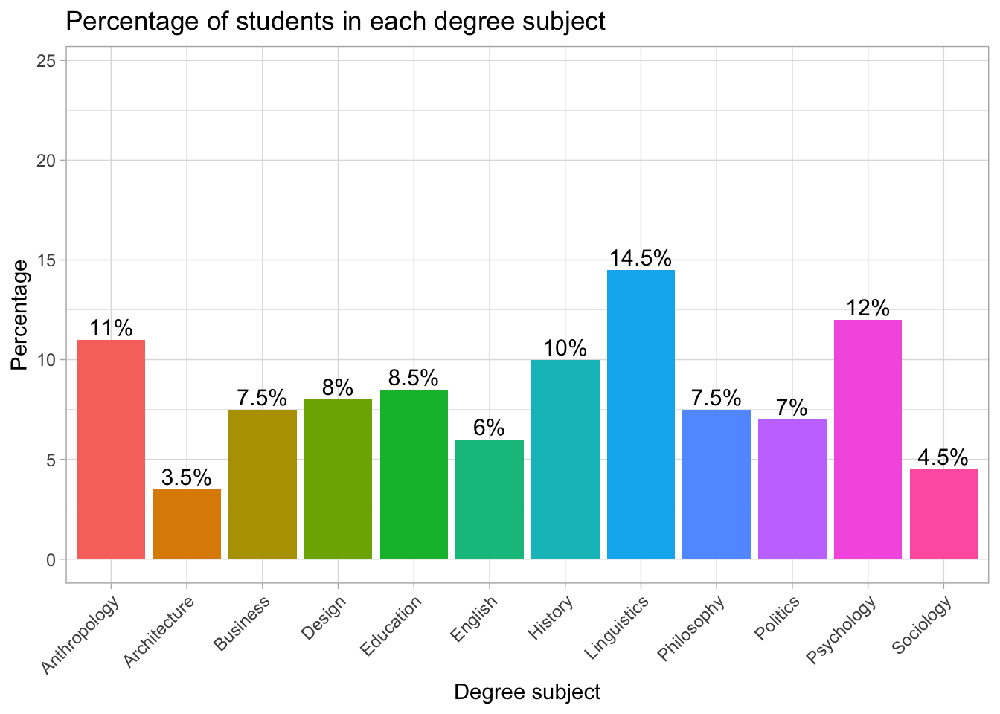

library(tidyverse)
students <- read_csv("Lecture1_data.csv", show_col_types = FALSE)Plots and the Grammar of Graphics
Visualisations help us understand how variables are distributed and how different groups compare.
In this resource we introduce the basic ideas behind ggplot2, the most widely used plotting package in the tidyverse.
The name ggplot comes from the Grammar of Graphics — a way of thinking about plots as made up of layers.
This page is a reference for understanding how plots work and how to customise them.
The Components of a ggplot
Every ggplot has three essential components:
Data
Aesthetics (
aes())Geometry (geoms)
We will use the same lecture dataset as in the main Week 09 page.
1. Data
This is the dataset you want to plot.
In ggplot, we give the data to the ggplot() function:
ggplot(data = students)
On its own this does nothing yet (no geometry has been added), but it tells ggplot where to find the variables.
2. Aesthetics (aes())
Aesthetics describe how variables are mapped to visual properties of the plot.
Common aesthetics:
x= what goes on the x-axisy= what goes on the y-axisfill= bar fill colourcolour= line or point coloursize= point sizeshape= point shape
Example 1: Degree on the x-axis
ggplot(
data = students,
aes(x = Degree)
)
Here we are saying:
“Use
studentsas the data”“Put
Degreeon the x-axis”
We still do not see a plot yet, because we have not added a geometry.
Example 2: Year vs satisfaction
ggplot(
data = students,
aes(x = Year, y = Satisfaction_Likert_value)
)
Here we are mapping:
Year→ x-axisSatisfaction_Likert_value→ y-axis
Again, we need a geometry to actually draw something.
3. Geometry (“geoms”)
Geoms tell ggplot what kind of plot to draw: bars, points, lines, etc.
Examples:
geom_col()— draw bars where the heights are given by a y variablegeom_bar()— count the number of rows in each category and draw barsgeom_point()— draw a scatterplot of pointsgeom_line()— draw lines through points
We add geoms to the base ggplot() call with +.
Example 1: Bar chart of Degree (using geom_bar())
ggplot(
data = students,
aes(x = Degree)
) +
geom_bar()
data = students→ use the students datasetaes(x = Degree)→ x-axis is degree subjectgeom_bar()→ count how many students are in each subject and draw bars
4. Common Plot Modifications
Below are some common changes students often want to make when customising their plots.
4.1 Fill bar colours
ggplot(data = freq_table, aes(x = area, y = n, fill = area)) +
geom_col()Example 2: Bar chart with fill colour
ggplot(
data = students,
aes(x = Degree, fill = Degree)
) +
geom_bar() +
labs(
x = "\n Degree subject",
y = "Count \n"
)
Here we have:
fill = Degree→ each bar is coloured according to its degree categorylabs()→ axis labels are added on top
4.2 Change axis labels and title
ggplot(freq_table, aes(area, n, fill = area)) +
geom_col() +
labs( title = "Counts of respondents by sub-discipline", x = "Sub-discipline", y = "Number of respondents" )4.3 Change the geom
ggplot(freq_table, aes(area, n, colour = area)) +
geom_point() +
labs(
title = "Counts of respondents by sub-discipline",
x = "Sub-discipline",
y = "Number of respondents"
)Note that with points we use colour = instead of fill =.
Example 3: Scatterplot of Year vs satisfaction
ggplot(
data = students,
aes(x = Year, y = Satisfaction_Likert_value)
) +
geom_point() +
labs(
x = "\n Year of study",
y = "Satisfaction rating \n"
)
This time:
geom_point()tells ggplot to draw points rather than barsEach point represents one student’s
YearandSatisfaction_Likert_value
Thinking of ggplot as a sentence
You can think of ggplot code like a sentence:
data + aesthetic mappings + geometry
For example:
ggplot(students, aes(x = Degree, fill = Degree)) +
geom_bar()
reads as:
Take the
studentsdata,
mapDegreeto the x-axis and fill colour,
and then draw a bar chart.
Each extra layer (themes, labels, scales, limits) is added with another +.
4.4 Change axis limits
ggplot(freq_table, aes(area, n, fill = area)) +
geom_col() +
ylim(0, 50)students |>
count(Degree) |>
ggplot(aes(Degree, n, fill = Degree)) +
geom_col() +
ylim(0, 60)
4.5 Remove (or move) the legend
ggplot(freq_table, aes(area, n, fill = area)) +
geom_col() +
theme(legend.position = "none")students |>
count(Degree) |>
ggplot(aes(Degree, n, fill = Degree)) +
geom_col() +
theme(legend.position = "none")
You can also use "bottom", "top", "left", or "right".
4.6 Change the Theme
students |>
count(Degree) |>
ggplot(aes(Degree, n, fill = Degree)) +
geom_col() +
theme_minimal()
Other themes include:
theme_bw()theme_classic()theme_light()
Each theme changes the overall style of the plot.
5. Putting It All Together
Here is a full example combining several layers:
ggplot(freq_table, aes(area, n, fill = area)) +
geom_col() +
labs(
title = "Counts of respondents by sub-discipline",
x = "Sub-discipline",
y = "Number of respondents"
) +
ylim(0, 50) +
theme_light()students |>
count(Degree) |>
ggplot(aes(Degree, n, fill = Degree)) +
geom_col() +
labs(
title = "Number of students in each degree subject",
x = "Degree subject",
y = "Count"
) +
ylim(0, 60) +
theme_light() +
theme(
axis.text.x = element_text(angle = 45, hjust = 1)
)
Each new feature (labels, limits, themes) is added with another +, just like adding more words to a sentence.
What this does
angle = 45rotates labels by 45 degreeshjust = 1shifts them so they line up neatly under the tick marks
If you prefer vertical labels, use:
axis.text.x = element_text(angle = 90, hjust = 1)students |>
count(Degree) |>
ggplot(aes(Degree, n, fill = Degree)) +
geom_col() +
labs(
title = "Number of students in each degree subject",
x = "Degree subject",
y = "Count"
) +
ylim(0, 60) +
theme_light() +
theme(
axis.text.x = element_text(angle = 90, hjust = 1)
)
If you prefer slightly slanted labels, use:
axis.text.x = element_text(angle = 30, hjust = 1)students |>
count(Degree) |>
ggplot(aes(Degree, n, fill = Degree)) +
geom_col() +
labs(
title = "Number of students in each degree subject",
x = "Degree subject",
y = "Count"
) +
ylim(0, 60) +
theme_light() +
theme(
axis.text.x = element_text(angle = 30, hjust = 1)
)Add count (n) on top of bars
students |>
count(Degree) |>
ggplot(aes(Degree, n, fill = Degree)) +
geom_col() +
geom_text(
aes(label = n),
vjust = -0.3, # move labels slightly above the bars
size = 4
) +
labs(
title = "Number of students in each degree subject",
x = "Degree subject",
y = "Count"
) +
ylim(0, 60) + # add space for labels
theme_light() +
theme(
axis.text.x = element_text(angle = 30, hjust = 1)
)
What was added?
geom_text(aes(label = n))
This tells ggplot to print the count (n) at the top of each bar.
vjust = -0.3
Moves the count slightly above the top of the bar so it’s visible.
Bar chart ordered from most common → least common
students <- students |>
mutate(Degree = factor(Degree))What this does:
This ensures that Degree is stored as a factor (a proper categorical variable). We need this so we can later reorder the categories.
plot_data <- students |>
count(Degree) |>
mutate(Degree = fct_infreq(Degree)) # now this worksWhat this does:
count(Degree)creates a frequency table (one row per degree + its count).fct_infreq(Degree)reorders the degree categories from most common → least common.- This only works because
Degreeis a factor.
- This only works because
levels(plot_data$Degree) [1] "Anthropology" "Architecture" "Business" "Design" "Education"
[6] "English" "History" "Linguistics" "Philosophy" "Politics"
[11] "Psychology" "Sociology" What this does:
It prints the order of the factor levels so we can check that they are now sorted by frequency.
library(forcats) # loaded automatically with tidyverse, but safe to includeWhat this does:
Loads the forcats package (used for working with factors).
It’s already included inside tidyverse, but loading it explicitly is fine.
plot_data <- students |>
mutate(Degree = fct_infreq(Degree)) |> # reorder by frequency (high → low)
count(Degree) # now count in that orderWhat this does:
A cleaner way to prepare the plot data:
Reorder
Degreeby frequency.Count how many students are in each degree using that order.
This gives us a properly ordered frequency table for the plot.
ggplot(plot_data, aes(x = Degree, y = n, fill = Degree)) +
geom_col() +
geom_text(
aes(label = n),
vjust = -0.3,
size = 4
) +
labs(
title = "Number of students in each degree subject (ordered by frequency)",
x = "Degree subject",
y = "Count"
) +
ylim(0, max(plot_data$n) + 10) +
theme_light() +
theme(
axis.text.x = element_text(angle = 30, hjust = 1),
legend.position = "none"
)
What this does, step by step:
ggplot(..., aes(...))→ sets up the plot: x-axis = Degree, y-axis = count.geom_col()→ draws bars with heights given byn.geom_text(label = n)→ adds the counts as text above each bar.labs(...)→ adds a title and axis labels.ylim(0, max(plot_data$n) + 10)→ adds space above the tallest bar so labels don’t overlap.theme_light()→ applies a clean theme.theme(axis.text.x = element_text(angle = 30, hjust = 1))
rotates the x-axis labels so they are easier to read.legend.position = "none"→ removes the legend (not needed because labels are already on the x-axis).
Understanding the ordered bar chart
This version of the chart orders degree subjects from most common to least common.
Linguistics has the highest number of students (29), followed by Psychology (24) and Anthropology (22).
Subjects such as Politics, Sociology, and Architecture are the least represented in this sample.
Ordering categories by frequency makes it much easier to compare groups at a glance, especially when the list of categories is long.
Percentage Bar Plot
# First create a summary table with counts and percentages
plot_data <- students |>
count(Degree) |> # count how many students per degree
mutate(percent = round(n / sum(n) * 100, 1)) # convert counts into percentages (rounded to 1 dp)
# Now create the bar chart
ggplot(plot_data, aes(x = Degree, y = percent, fill = Degree)) +
geom_col() + # draw bars with heights = percentages
geom_text( # add text labels on top of bars
aes(label = paste0(percent, "%")), # label = "45%" etc.
vjust = -0.3, # move labels slightly above the bars
size = 4
) +
labs(
title = "Percentage of students in each degree subject", # plot title
x = "Degree subject", # x-axis label
y = "Percentage" # y-axis label
) +
ylim(0, max(plot_data$percent) + 10) + # expand y-axis to make space for labels
theme_light() + # use a clean, light theme
theme(
axis.text.x = element_text(angle = 45, hjust = 1), # rotate x-axis labels for readability
legend.position = "none" # remove redundant legend
)
Try adding or removing layers to see what changes.
Interpreting the percentage bar chart
The chart shows how students are distributed across the different degree subjects. Linguistics is the most common subject, with 14.5% of the sample. Psychology follows with 12%, and Anthropology is close behind with 11%. Several subjects each account for around 7–10% of students (e.g., Business, Design, Education, History, Philosophy, Politics). Meanwhile, Architecture (3.5%) and Sociology (4.5%) are the least common subjects in this group.
Because the y-axis is in percentages, it is easy to compare subjects even though the raw numbers might differ. The percentage labels on each bar make the chart especially readable, allowing us to see immediately which subjects are more or less popular in the sample.
Teacher note: Why percentages are often better than counts?
When teaching categorical data, showing percentages instead of raw counts is usually clearer and more informative. Here’s why:
✔ Normalises the data
Percentages allow you to compare groups fairly, even when total sample sizes differ.
A bar that represents “20 students” means something very different in a sample of 40 vs a sample of 400 — but 50% always means the same thing.
✔ Helps us to interpret results quickly
Many people understand percentages more intuitively than raw counts.
Seeing “12%” immediately conveys the relative size of a group.
✔ Makes charts easier to compare
Two charts from different datasets become directly comparable when both are expressed in percentages.
✔ Reduces misinterpretation
Sometimes we might assume the largest count is the “most important” group.
Using percentages shifts the focus to proportions, which is what most analyses care about.
✔ Great preparation for inferential statistics
Later techniques (chi-square tests, proportions tests, confidence intervals) rely on proportions, so using percentages early builds good habits.
6. Additional Resources
If you want to explore ggplot in more detail, these resources offer clear explanations and many examples: